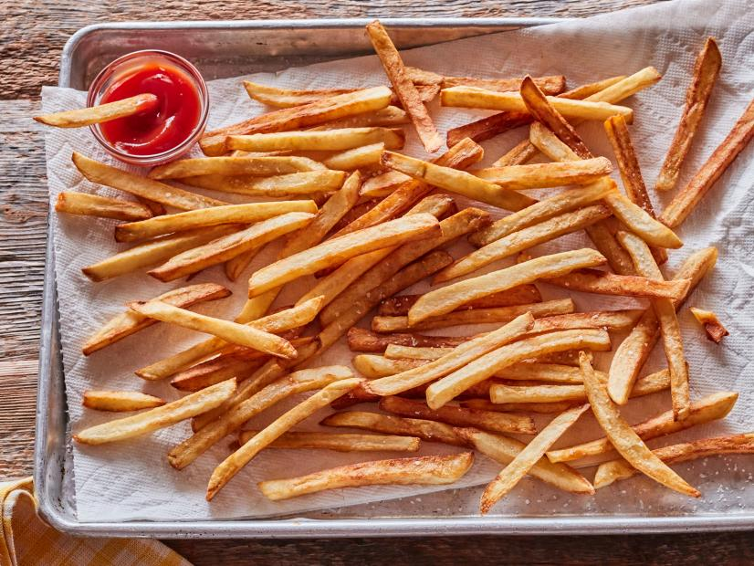

Just fries.
Time: 2 hours 50 minutes
Servings: 8
Ingredients
- 5 pounds russet potatoes
- Vegetable/Peanut oil
- Salt and pepper
Instructions
- Peel and rinse the potatoes. Cut them into sticks.
- Place them in a large bowl and cover with cold water. Allow them to soak, 2 to 3 hours.
- Drain off the water and lay the potatoes on 2 baking sheets lined with paper towels.
Blot with paper towels to dry them.
- Heat a few inches of oil in a heavy pot to 300 degrees F. In 3 or 4 batches,
cook the potatoes until soft, 4 to 5 minutes per batch.
- Once all the potatoes have been fried at 300 degrees F, turn up the heat until the oil reaches 400 degrees F.
When the oil's hot, start frying the potatoes in batches again, cooking until the fries are golden and crisp.
Remove the potatoes from the oil and drain on paper towels.
- Sprinkle with salt and pepper and dive in!
Go back to top